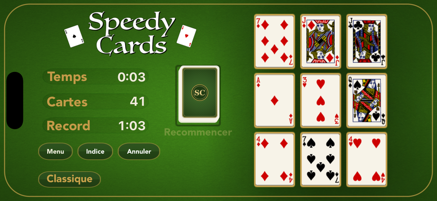
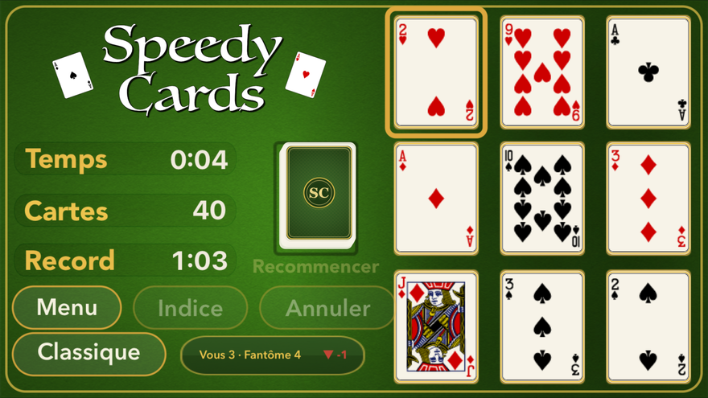
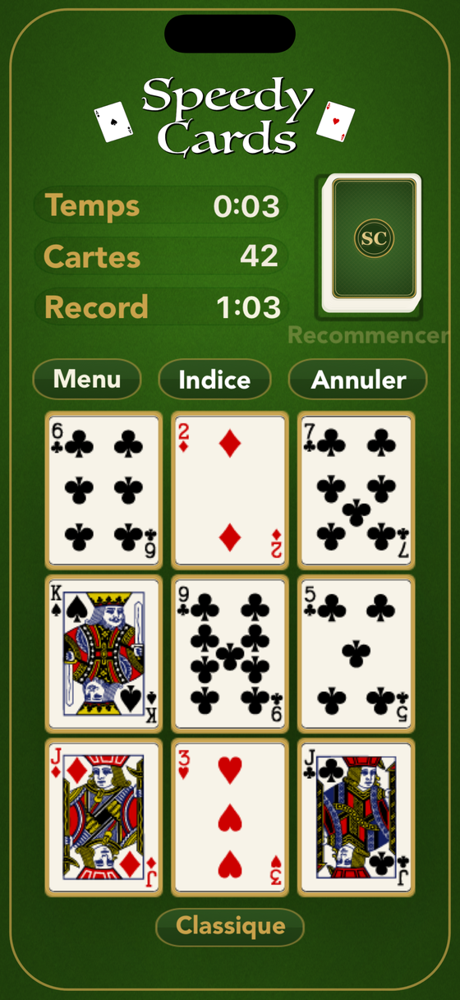

iPhone · iPad · Mac · Apple TV · Apple Watch
Sans pub.
Un seul prix.
SpeedyCards est une course de cartes rapide et élégante, dans l'esprit de la réussite, pour iPhone, iPad, Mac, Apple TV et Apple Watch. Videz le plateau en repérant les combos — un 10 seul, une paire dont la somme fait dix, ou Valet-Dame-Roi — tandis que de nouvelles cartes arrivent sans relâche. Courez contre le chrono, le paquet ou vos amis sur la donne identique.


Voir la combinaison avant que le paquet ne vous enterre
Videz le tableau : un 10 seul, deux cartes qui font dix, ou Valet-Dame-Roi. De nouvelles cartes arrivent pendant que vous cherchez, et elles n’attendent pas.
Trois formes, un coup d’œil
Un dix tout seul, deux cartes qui font dix, ou les trois figures ensemble. Ce sont toutes les règles, et vous n’y penserez plus jamais.
Le paquet ne s’arrête pas
Les cartes arrivent à intervalle régulier. Videz plus vite qu’elles n’arrivent et le tableau se dégage ; hésitez et il se remplit.
Courez contre ce que vous voulez
La montre, le paquet, la donne du jour, ou un ami sur exactement le même mélange.
Le même mélange, pour les deux
Un duel distribue exactement les mêmes cartes aux deux joueurs : la seule différence, c’est ce que vous avez vu et à quelle vitesse. Envoyez un lien ou un code de cinq lettres par n’importe quelle messagerie et courez contre son fantôme.
Pas de compte, pas d’inscription, aucun serveur à nous au milieu — le défi, c’est le code.
Une raison de revenir
Une donne quotidienne, mondiale
Tout le monde reçoit le même tableau chaque jour. Les séries se poursuivent, et on peut gagner des jokers pour le jour où la vie s’en mêle.
Un Gauntlet hebdomadaire
Un tournoi sur Game Center, chaque semaine.
Un album de laiton, trente tapis
Les tapis se gagnent en jouant, ils ne s’achètent pas — avec un rang de table qui monte à chaque partie, gagnée ou perdue.
Cinq plateformes, un seul jeu
Il se joue sur le téléphone dans votre poche, le Mac sur votre bureau, la télévision à l’autre bout de la pièce et la montre à votre poignet. Séries et progression vous suivent via votre propre iCloud, que nous ne pouvons pas lire.

Le tableau, où que vous soyez
En portrait sur le téléphone, en paysage sur le Mac, à l’autre bout de la pièce sur la télévision, et d’un coup d’œil sur la montre. Même donne, mêmes règles, même tentative sur votre record.
La progression voyage par votre propre compte iCloud, entre vos propres appareils. Nous ne la voyons jamais.
Pour les joueurs
Pas de publicité. Aucun traceur. Pas de compte. Rien n’est collecté, rien n’est vendu, et aucun SDK publicitaire ne vous regarde. Game Center est facultatif et appartient à Apple. Tout est un achat unique — rien ici ne se renouvelle.
Le jeu parle onze langues : français, anglais, allemand, espagnol, italien, portugais, japonais, coréen, grec, ukrainien et russe.
SpeedyCards
Gratuit à jouer, déverrouillé en un achat. Cinq plateformes Apple, onze langues, sans compte.